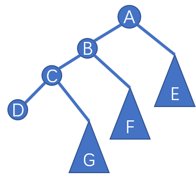
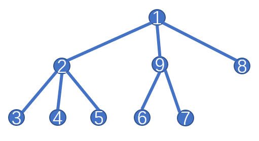
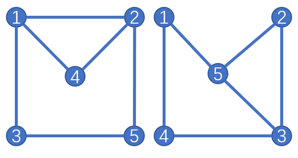

树是一种特殊的图,有着许多优美的性质,在OI中也有许多的应用.本文主要讲解树与二叉树的存储方式与遍历,树的直径与重心,最近公共祖先,最后简单介绍虚树与笛卡尔树.
0x11 树与二叉树的存储方法
树作为一种特殊的图,同样也可以用图的存储方式进行存储.但是由于树的不存在环的特殊性,对于树由更特殊的方式可以存储它.
对于任意树,可以记录每个节点的儿子的编号,也可以记录父亲节点的编号(默认为有根树,无根树可以转化为有根树).
对于二叉树,可以记录每个节点的左右儿子的编号.
即使树有其特殊的存储方式,但在一般的问题中,直接用图的存储方式,在Dfs过程中记录一个父亲,防止遍历回去,然后就直接递归即可;Bfs过程中记录一个vis数组,每次查看它指向的点是否被访问过.
0x12 树与二叉树的遍历
树由于其特殊性,由其特殊的,不同于普通图的遍历方式.
前序遍历
所谓前序遍历,就是先访问自己,再依次遍历自己的每个儿子.这个过程用递归去完成.
对于树,前序遍历并不唯一,但对于二叉树,这是唯一的.要求要先遍历自己,再遍历左儿子,最后遍历右儿子.同样递归去完成.
1 | void Dfs_First(int x,int fa) { |
最终dfn数组即为该树的一个可能的前序遍历序.
对于二叉树,直接按照定义做就行了.
1 | void Dfs_First(int x) { |
后序遍历
大体上与前序遍历一样,只不过是在最后记录自己.
1 | void Dfs_Last(int x,int fa) { |
二叉树也是一样的改法.
1 | void Dfs_Last(int x) { |
二叉树的中序遍历
由于二叉树是特殊中的特殊,所以它还有一种中序遍历,就是先遍历左儿子,在访问自己,最后遍历右儿子.
1 | void Dfs_In(int x) { |
层次遍历
其实这就是树的Bfs序,从根节点开始,用队列依次Bfs访问每个点.
1 | void Bfs() { |
0x13 树的直径与重心
树的直径
树的直径定义为一棵树中的最长的一条路径.利用Dp可以在$O(n)$的时间内求解.
记录一个f[],g[]数组.其中f[x]表示以x为端点,到其子树的最长路径;g[x]表示以x为端点,到其子树的非严格次短路径.求出之后再枚举每个点,将其f[x]+g[x]取最大值就是答案了.
1 | int f[MAXN],g[MAXN],ans=0; |
最后答案就是ans了.
当然,还可以利用两遍Dfs求解.
算法流程如下:从任意一点P出发,找到与它距离最长的节点Q;再从Q出发,找到与它距离最长的节点W,则WQ就为这棵树的直径.
证明略,可以感性理解一下.
1 | int mx,now,s,t,ans; |
最终答案就是ans,mx是用于求最长路径的临时变量,now是用于求最长路径的端点的临时变量.其中一条直径就是s到t的路径.
树的重心
树的重心定义为一个节点,要求该节点的最大的子树大小最小.比较绕,其实就是将这个点置为根后,它的所有子树中的节点个数的最大值,要求这个值要最小.
直接按照定义计算,枚举每个点为根,计算最大子树大小,时间复杂度为$O(n^2)$,显然不够优秀.
我们可以记录一个数组f[x]表示当x为整棵树的根时,它的最大子树大小,sz[x]表示以x为根的子树的节点个数.那么就可以知道：
对于sz数组的转移,应该没什么好说的吧.对于f数组来说,里面max是在算它的目前以某个点为根的儿子的最大节点数,外面的max就是在算它的父亲那棵子树的贡献.
(突然发现这就是最简单的换根法)
1 | int sz[MAXN],f[MAXN],g; |
其中sz[x],f[x]的意义如上述所示,n为节点个数,g表示重心.
0x14 最近公共祖先LCA
在一个有根树中,一个点的祖先定义为该点到根节点的上的所有节点(包括它自己).两个点的公共祖先就是两个点共同拥有的祖先.而最近公共祖先(Least Common Ancestors,LCA)为两个点的所有公共祖先中深度最大的一个公共祖先.
树上倍增法
LCA问题与区间最值问题(Range Minimum / Maximum Query ,RMQ)有着千丝万缕的联系.这两个问题可以相互转换,相互解决.在某些解法上甚至还有些相似.
大家都知道,RMQ问题可以用ST表在$O(n\log n)-O(1)$的时间复杂度内解决(前面的是预处理时间,后面的是单次询问的时间复杂度).具体做法是设f[i][j]为区间$[i,i+2^j-1]$的最值,则可以得到一个转移方程：
询问时令$k=\log_2(r-l+1)$,则答案为：
这是对暴力的空间和时间的优化.
同样,我们来想想LCA的暴力怎么实现？设求x,y的LCA,记为LCA(x,y),那么我们可以先将它们调整到同一深度上,此时如果x==y,那么x就是原来两个节点的LCA;若不是,则让它们同时向它的父亲爬,直到它们到达同一节点,此时这个节点就是原来两个点的LCA.
考虑优化.定义f[i][j]为节点i的$2^j$倍祖先,容易知道,f[i][0]就等于i的父亲,这个信息可以在一遍Dfs中得到.转移也很好转移:
即将$2^j$拆分为两个$2^{j-1}$计算,先跳$2^{j-1}$步,再跳$2^{j-1}$步.
求LCA的过程像是用二进制取拼凑成一个数.我们先将它们跳到同一深度,之后才方便两个节点同时跳.然后再一直跳,条件是f[x][i]!=f[y][i],最终的答案就是最后跳到的节点的父亲.
可能有人有疑问了,为什么是不等于,而不是等于？如果等于的话,跳到的节点就会超过了最近公共祖先的深度,不等于保证这两个节点始终在LCA的下面,最终为LCA的两个儿子.还有就是为了保证正确性,要从大到小的枚举j,就像是要确定一个数,可以从高位往低位取确定,这里就是二进制下的数.
这就是著名的倍增法求LCA,时间复杂度$O(n\log n)-O(\log n)$.
1 | void Dfs(int x,int fa) {//1 |
解释一下:
Dfs搜索出每个节点的深度dep[x]与每个节点的父亲f[x][0]- 预处理出$\log_2x$
- 预处理出
f数组 - 求两个点的LCA
- 将深度大的节点往上跳,直到它们两个节点深度相同
- 若相等,则说明当前点就是LCA
- 否则同时向上跳,从
lg[dep[x]]开始,到0为止.f[x][i]!=f[y][i]就直接向上跳使得它们成为LCA的两个儿子 - 最后跳到节点的父亲就是它们的LCA
- 由于两个点的LCA在有根树中才有意义,所以要从指定的根节点开始.
实际上,倍增LCA最重要的是树上倍增这个思想,借着这个思想我们可以求得树上任意两点之间的距离,最大边权,最小边权等.
Tarjan LCA
有时候询问次数很多,点数也很多,用倍增法时间复杂度上就吃不消了.这时候如果题目没有要求强制在线,那么可以用Tarjan LCA.它的时间复杂度为$O(n+m)$,其中$n$为点数,$m$为询问数.唯一的缺点就是要离线处理.
如果我们将所有的询问离线下来,将其用类似存图的方式,对于每次询问的点都加入这个询问.由于两个点一定是它们的LCA的两子树的节点,所以可以对整棵树进行一次Dfs,对于每个节点,它的子树遍历完后,将这棵子树与当前节点合并为一个节点,退出的时候标记这个点已经被访问过.在退出之前,扫描与这个点有关的节点,若它的询问点也被遍历到,那么答案就是询问点当前所在集合的根节点.

如图,设当前访问的点为C,已经将G子树合并到C上了,E子树合并到A上,并未访问F子树,那么递归D时,若D有一个询问在G子树中,那么此时答案显然就是C,也就是那个询问点合并到的根节点；若有询问在E中,那么答案也就是A,同样是询问点合并到的根节点；若有个询问在F子树中,由于并未遍历到F子树中的节点,所以并不会更新答案.至于正确性,可以感性理解一下.
对于如何合并,可以使用并查集去维护.每次递归完一棵子树后将其向其父亲合并,查询时直接找根就行了.
1 |
欧拉序LCA
所谓欧拉序LCA是随手取的名字,实际上是LCA向RMQ转化的一个过程.利用欧拉序,将LCA问题转化为RMQ问题.再利用RMQ进行$O(!)$查询.
所谓欧拉序,就是再Dfs过程中,到达一个点,就将这个点记录下来,每次都记录.就比如说下图的一种可能的欧拉序就是1 2 3 2 4 2 5 2 1 9 6 9 7 9 1 8 1.

容易知道,欧拉序的长度为$2n-1$.
定义每个节点的位置为其第一次出现的位置,那么通过观察可以知道,两个节点的LCA为这两个节点的位置作为左右端点组成的区间中,深度最小的节点.比如说3与5的LCA,它们第一次出现的位置分别为$3$与$7$,而区间$[3,7]$中深度最小的节点就是$2$,而通过观察图可以发现,它们的LCA的确是$2$.因此可以通过遍历这棵树求得其欧拉序,再用解决RMQ问题的常用方式ST表进行处理.这样的时间复杂度为$O(n\log n)-O(1)$.
对于RMQ问题,由于在树上的特殊性,所以相邻节点的深度差的绝对值是不超过1的,这就可以用约束RMQ的解决方式,时间复杂度为$O(n)-O(1)$.
数据结构求LCA
对于一些数据结构,可以用来求LCA.最常见的就是树链剖分与动态树LCT.
树链剖分求LCA
虽然树链剖分有两种,重链剖分与长链剖分,但具体的过程还是一样的.这两种剖分方式在求LCA方面是基本没有差别,只是复杂度的区别而已.用重链剖分是$O(n)-O(\log n)$,长链剖分是$O(n)-O(\sqrt{n})$.
具体过程就是跳链,跳剖分好的链,若它们不在同一条链上,就跳所属链的链头深度大的那个节点,将其跳的链头的父亲,重复这个过程,直到它们在同一条重链上.此时深度小的节点就是原来两个点的LCA.
1 |
动态树LCT求LCA
用LCT求LCA,时间复杂度是$O(n\log n)-O(\log n)$(由于一开始需要$O(n)$次Link操作).具体思路就是将其中一个点,设为x,打通到根(Accsee(x)),再将另一个节点,设为y,在打通到根的过程中记录最后一个转换的节点,那么这个点就是Lca(x,y).
因此,在Access()函数中需要做一些改动,记录最后一个转换节点,并返回这个节点.需要注意的是,在一开始需要将根Makert一下.
1 | int Access(int x) { |
解释一下.
- 这里记录最后一个变换虚实边的节点,并返回这个节点
- 这样的话LCA的过程只有两行,先把一个节点打通到根,再返回另一个节点
Access后的值
感觉用LCT可以做到动态LCA,每次询问指定一个点为根,询问另外两个点的LCA.每次Makert一下根节点就可以了,求法依旧如此.
通常的题目是不会卡LCA算法的,所以只需掌握前两种即可.
0x15 树哈希与树的同构
树的同构
对于两个整数值可以是相同的,也可以是不同的.与之对应的是,两张图怎么定义相同？在这里,我们不称两张图相同,而称之为两张图同构.具体来说就是对于第一张图的每个节点$u_i$,能够找到一个两张图的一一映射的关系,使得第二张图的每个节点$v_j$有$v_j=f(u_i)$,且原来图中的边$(u_i,u_j)$在映射后到另一张图上存在边$(f(u_i),f(u_j))$,原来图中没有的边$(u_i,u_j)$映射到另一张图后没有边$(f(u_i),f(u_j))$,那么就称这两张图同构.
比如下面两张图就是同构的,可以找到一个映射关系$(1,3)(2,5)(3,4)(4,2)(5,1)$,使得每一条在前一张图中出现的边在后一张图中任然存在,前一张图不存在的边后一张图任然不存在.

但是很不幸的是,两个图的同构目前还没有多项式算法.但是由于树的良好性质,树的同构有较好时间复杂度的算法.
树的最小表示法
先考虑有根树的同构.由于有根树根确定,那么我们可以找出两个树的以对应根节点为根的最小表示法.容易知道,再对树进行深度优先遍历时,是先进入一棵子树,再从这棵子树里出来.因此,这就像是一个括号序列一样,进入用左括号表示,离开用右括号表示,这样的话一个括号序列就可以唯一确定一棵树.所以我们可以用树的括号序列来实现树的最小表示法.括号序列就直接用01进行表示.
具体做法如下：
- 访问一个节点的所有子树,获得其子树的最小表示
- 将其子树的最小表示按照字符串排序方式从小到大排序,并将排序后的最小表示拼接起来
- 再在头尾插入括号,表示递归完这棵树,返回这个字符串.
获得两棵树的最小表示后直接比较其最小表示就可以判断两棵树是否同构.
这是有根树的情况.对于无根树要怎么做？实际上可以暴力枚举每个点为根的情况,取最小值作为该树的最小表示,再进行比较.但这样时间复杂度不够优秀.可以证明,一棵树的重心的个数不超过两个,因此可以枚举重心,找出以每个重心为根的情况,取最小值然后再比较.
1 |
树哈希
与字符串哈希类似,树哈希也是将一棵树通过某种运算转换为一个整数值.我们可以用类似树上递推的做法求出哈希值.首先肯定如上面一样要对子树的哈希值排序,因为子树顺序并不影响同构.设节点$u$的子树的哈希值排序后分别为$H_1,H_2,\cdots,H_k$,然后就有一个这样的公式：
设$Hsum_i$为$u$的前$i$个儿子的哈希值,则可以写成递推形式：
最终$Hash(v)=Hsum_k$.在上面的公式中,$a,p,q$是指定的参数.哈希方式不一定一样,只要保证不容易出现相同的情况就可以了.但是直接用Rabin-Karp的哈希方式在这里不太适用,很容易找到反例.
我们可以用树哈希来判断树的同构:
1 |
0x16 虚树
待补.
概述
虚树,顾名思义就是不存在的树,一般是用来优化Dp的.对于这样一种问题,每次询问给你树上的k个点,求与这k个点有关的信息,$O(\sum_{i=1}^mk_i)=O(n)$.首先,我们可以对于每个询问,取暴力对整棵树跑树形Dp,将其他无关的点的贡献设为0,再统计答案.这样的时间复杂度显然是$O(nm)$的,对于$n,m$大一点对于要TLE.我们可以发现,$O(\sum_{i=1}^mk_i)=O(n)$,这个重要的条件我们还没有用到.这提示这我们可以设计出一种算法,使得这种算法在每次询问时的时间复杂度只与$k$有关.这就引出了虚树的构建.
构建
虚树的构建其实是单调栈的运用.我们用一个栈,这个栈存储从根节点到栈顶节点这条链上的节点.当进来一个新的节点的时候,就会有如下三种情况:
应用
0x17 笛卡尔树
待补.
概述
笛卡尔树是一种特殊的二叉查找树.这种树上每个节点有两个权值key,value,其中key满足堆性质,value满足二叉查找树的BST性质.